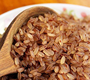
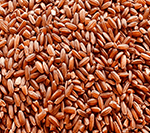
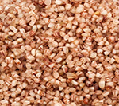
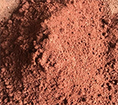

Our products:

- Matta Rice
- The brown outer layer of the Matta rice contains many nutrients and white rice is made by polishing away this valuable layer. One cup of Matta rice can contain 84 milligrams of magnesium and one gram of calcium. It also contains vitamins.

- Navara rice
- Navara rice is one of the many types of rice found in India, and is a unique grain plant in the Oryza group. It originated somewhere in Kerala, where it is regarded as endemic. In 2007–09, geographical indication status was granted.

- Matta Broken Rice
- High fibre content and a low glycaemic index (compared to polished white rice), Palakkadan Matta or Rosematta is one of the healthiest Indian rice varieties. It is also high in magnesium and vitamins A and B.

- Bran
- Bran, also known as miller's bran, is the hard outer layers of cereal grain. It consists of the combined aleurone and pericarp. Along with germ, it is an integral part of whole grains, and is often produced as a byproduct of milling in the production of refined grains.